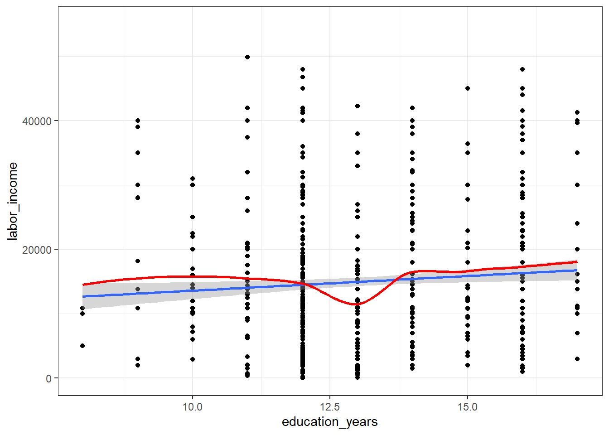

Predicting Income with Social Data
Przemyslaw Lagosz
25 03 2021
Przygotowanie danych
Wiek
# view data structure
str(psid)## 'data.frame': 26445 obs. of 10 variables:
## $ X.1 : int 1 2 3 4 5 6 7 8 9 10 ...
## $ X : int 1 2 3 4 5 6 7 8 9 10 ...
## $ gender : int 2 2 2 2 1 2 2 1 2 1 ...
## $ age : int 59 57 43 44 42 30 27 27 25 21 ...
## $ married : int 0 0 0 0 0 1 0 0 0 0 ...
## $ employed : chr "disabled" "employed" "disabled" NA ...
## $ educated_in_us : int 1 1 1 9 1 1 1 1 1 0 ...
## $ highest_degree : chr "no college" "no college" "no college" "no college" ...
## $ education_years: int 12 12 12 99 12 12 12 12 12 0 ...
## $ labor_income : int 0 0 0 0 0 0 0 0 0 0 ...head(psid)%>%
mine_kable()| X.1 | X | gender | age | married | employed | educated_in_us | highest_degree | education_years | labor_income |
|---|---|---|---|---|---|---|---|---|---|
| 1 | 1 | 2 | 59 | 0 | disabled | 1 | no college | 12 | 0 |
| 2 | 2 | 2 | 57 | 0 | employed | 1 | no college | 12 | 0 |
| 3 | 3 | 2 | 43 | 0 | disabled | 1 | no college | 12 | 0 |
| 4 | 4 | 2 | 44 | 0 | NA | 9 | no college | 99 | 0 |
| 5 | 5 | 1 | 42 | 0 | employed | 1 | no college | 12 | 0 |
| 6 | 6 | 2 | 30 | 1 | employed | 1 | no college | 12 | 0 |
# plot age
psid_age_plot <- psid %>%
ggplot(aes(x = age)) +
geom_bar()
psid_age_plot# filter to reasonable age group
psid <- psid %>%
filter(age > 18 & age < 75)
# plot flitered age
psid_age_plot <- psid %>%
ggplot(aes(x = age)) +
geom_bar()
psid_age_plotLata edukacji
# plot education
psid_education_plot <- psid %>%
ggplot(aes(education_years,education_years)) +
geom_boxplot()
psid_education_plot# filter to reasonable education levels
psid <- psid %>%
filter(education_years > 5 & education_years < 25)
psid_education_plot <- psid %>%
ggplot(aes(education_years,education_years)) +
geom_boxplot() +
labs(title = 'Years of education')
psid_education_plotPrzychody
# plot income
psid_income_plot <- psid %>%
ggplot(aes(labor_income, labor_income)) +
geom_boxplot()
psid_income_plot# Odfiltrowanie 0 pzychodów
psid <- psid %>%
filter(labor_income > 1)
# Ponowne sprawdzenie wykresu
psid_income_plot <- psid %>%
ggplot(aes(labor_income, labor_income)) +
geom_boxplot()
psid_income_plot# view income summary statistics
summary(psid$labor_income)## Min. 1st Qu. Median Mean 3rd Qu. Max.
## 50 10295 10847 18442 22000 370500# Sprawdzenie kwantylu 95
kwantyl95 <- quantile(psid$labor_income, probs = 0.95)
kwantyl95## 95%
## 50000## Odfiltrowanie skrajnych górnych wartości.
psid <- psid %>%
filter(labor_income < kwantyl95)
# Ponowne sprawdzenie wykresu
psid_income_plot <- psid %>%
ggplot(aes(labor_income, labor_income)) +
geom_boxplot()
psid_income_plot# plot mean income by age
psid_income_by_age <- psid %>%
group_by(age) %>%
summarise(mean_income = mean(labor_income)) %>%
ggplot(aes(x = age, y = mean_income)) +
geom_point()
psid_income_by_age
# Odfiltrowanie poniewaz wszyskie obserwacje powyzej 50 roku życia = 0
psid <- psid %>%
filter(age < 50)
# plot mean income by
psid_income_by_age <- psid %>%
group_by(age) %>%
summarise(mean_income = mean(labor_income)) %>%
ggplot(aes(x = age, y = mean_income)) +
geom_point()
psid_income_by_age
Modelowanie
Model 1 zmiennej
# subset data points into train and test sets
set.seed(123)
sample <- sample(c(TRUE, FALSE), nrow(psid), replace = T, prob = c(0.6,0.4))
# define train and test
train <- psid[sample, ]
test <- psid[!sample, ]
# build model
model <- lm(labor_income ~ education_years, data = train)
model$coef## (Intercept) education_years
## 9058.8771 455.0425summary(model)##
## Call:
## lm(formula = labor_income ~ education_years, data = train)
##
## Residuals:
## Min 1Q Median 3Q Max
## -15340 -5493 -3672 4140 35786
##
## Coefficients:
## Estimate Std. Error t value Pr(>|t|)
## (Intercept) 9058.9 2476.0 3.659 0.000269 ***
## education_years 455.0 188.2 2.417 0.015836 *
## ---
## Signif. codes: 0 '***' 0.001 '**' 0.01 '*' 0.05 '.' 0.1 ' ' 1
##
## Residual standard error: 10120 on 872 degrees of freedom
## Multiple R-squared: 0.006657, Adjusted R-squared: 0.005518
## F-statistic: 5.844 on 1 and 872 DF, p-value: 0.01584# plot against LOESS model
plot_model <- train %>%
ggplot(aes(x = education_years, y = labor_income)) +
geom_point() +
geom_smooth(method = "lm") +
geom_smooth(se = F, colour = 'red')+
coord_cartesian(ylim = c(0,55000))
plot_model
# compute r-squared
r_sq <- round(summary(model)$r.squared * 100, 2)
## Interpretacja
sprintf("Based on a simple linear regression model, we have determined that %s percent of the variation in respondent income can be predicted by a respondent's education level.", r_sq)## [1] "Based on a simple linear regression model, we have determined that 0.67 percent of the variation in respondent income can be predicted by a respondent's education level."Model kilku zmiennych
# build second model
model_2 <- lm(labor_income ~ education_years + age + gender, data = train)
r_sq_2 <- round(summary(model_2)$r.squared * 100,2)
## Interpretacja
sprintf("Based on a simple linear regression model, we have determined that %s percent of the variation in respondent income can be predicted by a respondent's education level, age and gender.", r_sq_2)## [1] "Based on a simple linear regression model, we have determined that 7.03 percent of the variation in respondent income can be predicted by a respondent's education level, age and gender."# plot predictions versus observed
test <- add_predictions(data = test, model = model_2)
plot_model <- ggplot(data = test, aes(age, labor_income)) +
geom_point() +
geom_line(aes(y = pred), color = "blue")+
coord_cartesian(ylim = c(0,55000))
plot_model# write out model results
summary(model_2)##
## Call:
## lm(formula = labor_income ~ education_years + age + gender, data = train)
##
## Residuals:
## Min 1Q Median 3Q Max
## -19158 -6687 -2532 3655 35995
##
## Coefficients:
## Estimate Std. Error t value Pr(>|t|)
## (Intercept) 4074.64 2751.45 1.481 0.138994
## education_years 476.03 183.86 2.589 0.009783 **
## age 317.66 47.87 6.636 5.66e-11 ***
## gender -2444.49 672.22 -3.636 0.000293 ***
## ---
## Signif. codes: 0 '***' 0.001 '**' 0.01 '*' 0.05 '.' 0.1 ' ' 1
##
## Residual standard error: 9800 on 870 degrees of freedom
## Multiple R-squared: 0.07029, Adjusted R-squared: 0.06708
## F-statistic: 21.92 on 3 and 870 DF, p-value: 1.082e-13model_2$coefficients## (Intercept) education_years age gender
## 4074.6371 476.0315 317.6605 -2444.4909Do education_years, age, and gender all have a significant impact on labor_income ? All variables are highly significant, with a p-value < 0.01.
gender is a boolean categorical variable; how should we interpret its’ coefficient value? In this case, the gender coefficient represents the effect of changing the gender of the respondent to woman.
**Which variable has the largest effect on labor_income?* *gender has the largest absolute effect on labor_income.
# extract education coefficent
education_coefficent <- round(model_2$coefficients[2],2)
## Interpretacja
sprintf("Based on a multiple linear regression model of education, age, and gender, for every additional year of formal education, the average American resident's income increases by $%s.", education_coefficent)## [1] "Based on a multiple linear regression model of education, age, and gender, for every additional year of formal education, the average American resident's income increases by $476.03."